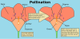

pollination

Definition: Pollination is the transfer of pollen from an anther of a plant to the stigma of a plant, later enabling fertilisation and the production of seeds. Pollinating agents can be animals such as insects, for example beetles or butterflies; birds, and bats; water; wind; and even plants themselves. Pollinating animals travel from plant to plant carrying pollen on their bodies in a vital interaction that allows the transfer of genetic material critical to the reproductive system of most flowering plants. When self-pollination occurs within a closed flower. Pollination often occurs within a species. When pollination occurs between species, it can produce hybrid offspring in nature and in plant breeding work.
Source: Wikipedia
Wikipedia Page (Something wrong with this association? Let us know.)
Wikidata Page (Something wrong with this association? Let us know.)